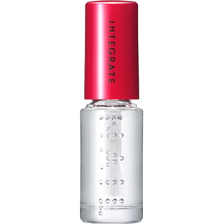

返回列表
产品名称：インテグレート トップ＆ベースコート N

資生堂 インテグレート トップ＆ベースコート N －
メーカー 資生堂
JANコード 4901872055203
商品の特徴
速乾つやつやトップ＆ベースコート。
成分・分量
-
用法及び用量
●瓶の口もとで筆先を軽くしごき、量を調整してから爪に塗布してください。 ●ベースコートとして使用する場合はネールエナメルを使用する前に、トップコートとして使用する場合はネールエナメルが乾いてからお使いください。